WORK BUILT
TO MAKE AN
IMPRESSION.
A selection of brand identities, websites, photography, and campaign work created for restaurants and hospitality brands that refuse to look ordinary.
Hotel Coco
San Blas Nayarit
Complete luxury hotel brand identity — logo system, signage, staff uniforms, amenity packaging, room branding, and digital presence for a tropical boutique hotel in Nayarit, Mexico.
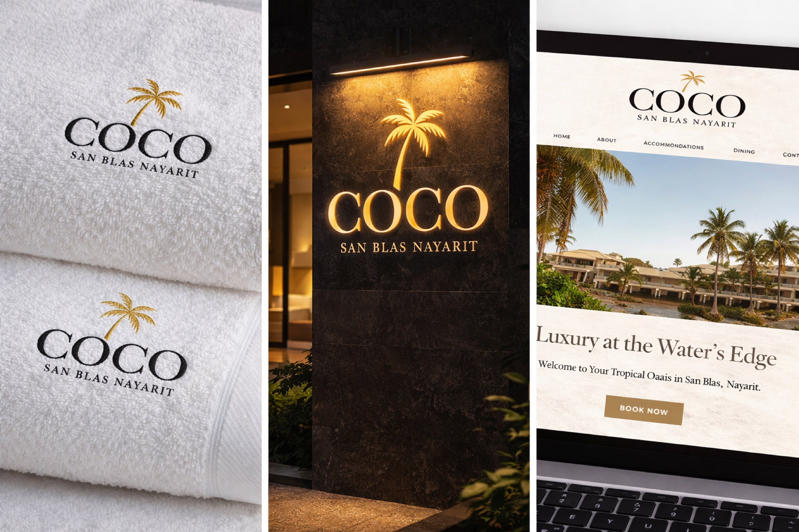
Every Detail
Considered.
From key cards and door signage to poolside amenities and branded drinkware — a full brand system designed to feel premium at every guest touchpoint.

Blue Seafood
& Grill
Modern seafood restaurant website focused on luxury visuals, cinematic presentation, and elegant user experience.
View Website
Editorial
Cocktail Series
Luxury cocktail photography shot with rose petal staging, cinematic lighting, and editorial composition — created to make hospitality brands feel premium and unforgettable.

Restaurant
Visual Direction
Studio food photography, taco platter editorials, social media campaigns, and cinematic content created for restaurants and hospitality brands across Michigan and Florida.
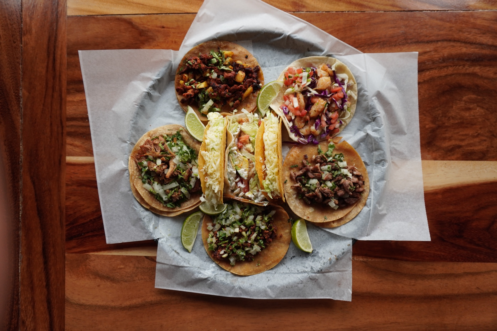
Campaign creative that makes people stop scrolling.
Cinematic content designed for restaurants and hospitality brands — visuals that create emotion before anyone walks through the door.
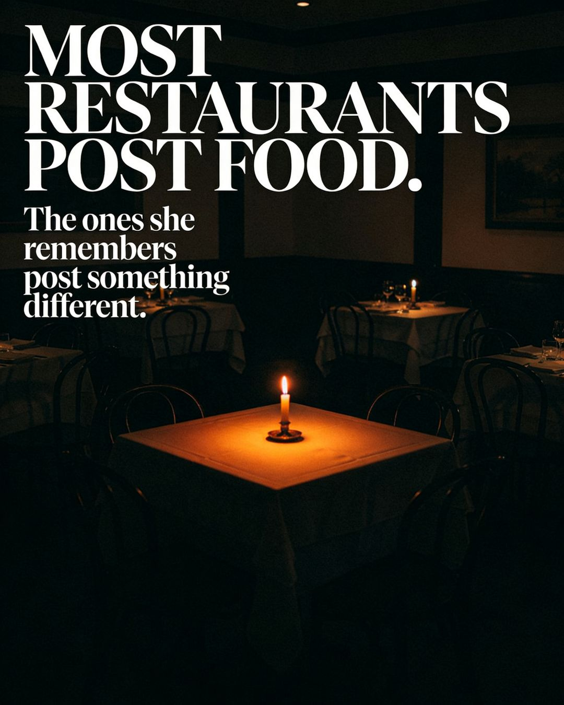
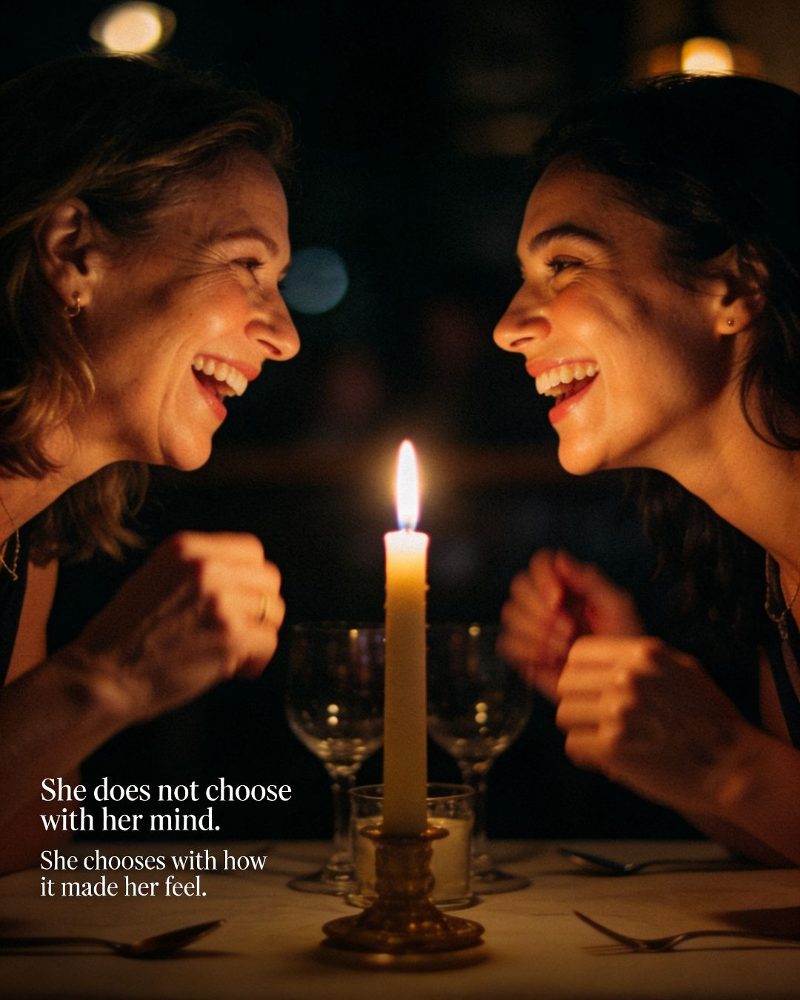
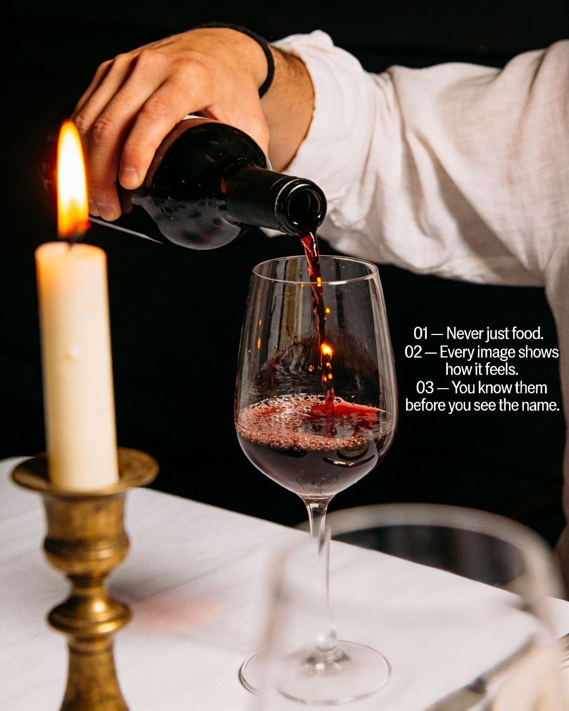
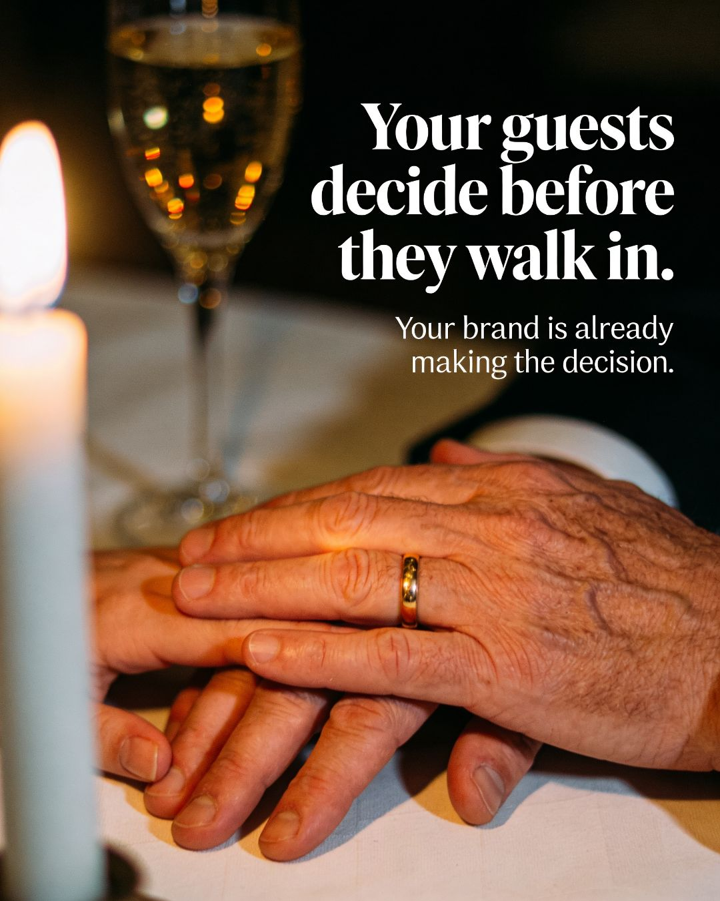
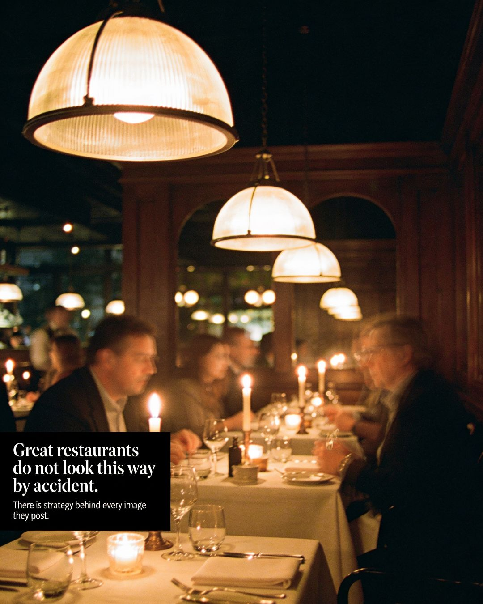
Visuals built for modern brands.
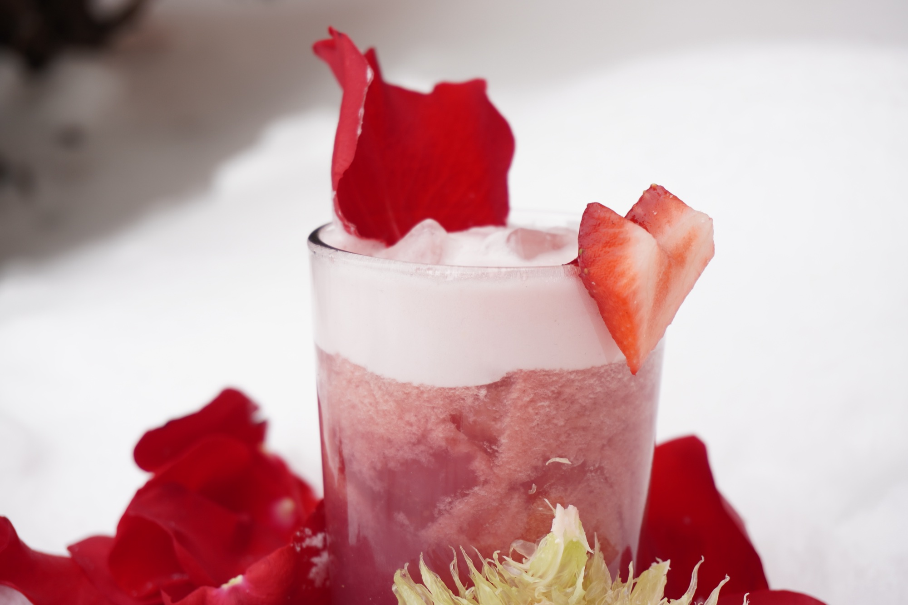
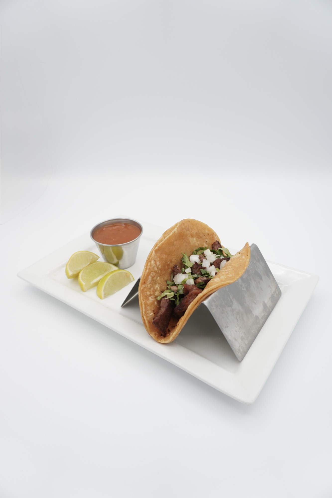
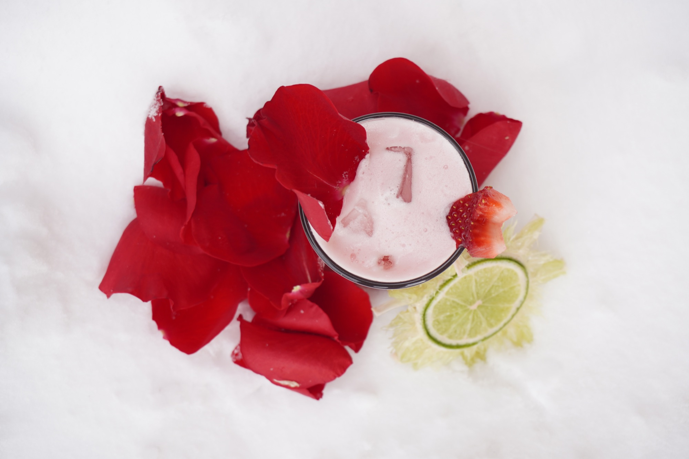
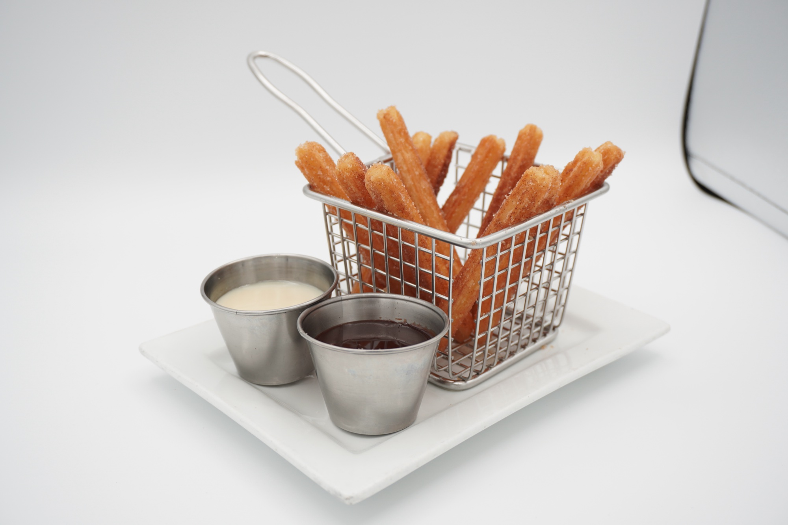
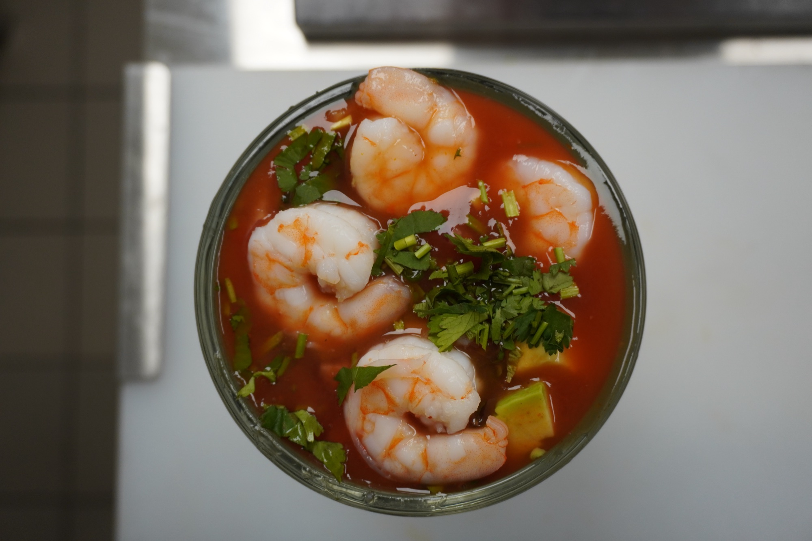